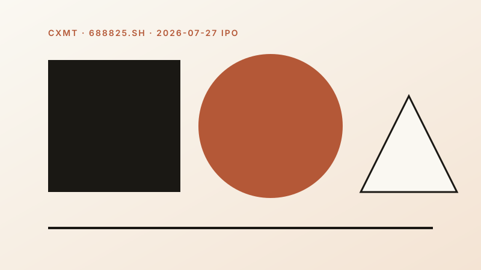
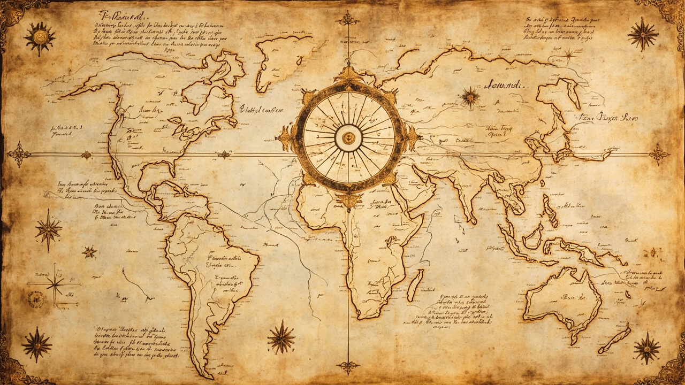

What I have written, slowly
Each one comes with a voice, made by a quiet machine, for the people who listen while they walk.

行业版 A 股情绪指数：4 个极度恐惧，2 个中性，1 个恐惧。
大盘情绪 24.4 是加权结果，拆开看是结构性分化。科技 / 新能源 / 制造 / 周期 全部极恐；金融 / 消费 撑在中性。7 行业标准差 19.1——分歧才是关键信号。

A 股情绪指数：当市场恐慌到 24.4 分，我做了件事。
仿 CNN 恐惧与贪婪指数的 A 股版。13 个成分 + 滚动分位数标准化。当前 24.4 分极度恐惧，按 2018-2026 回测极恐（<25）后做多 60 日胜率 55.3%，极恐 2 胜率 60%。

Copilot Studio × Teams / Outlook: making GenAI actually land on the frontline.
Series #3. Four agents, three fallbacks, two integration paths. Why entry point + real data + observability is the last mile from PPT to production.

Power BI DirectLake × Power Apps/Automate: when data can act for itself.
Series #2. Three production scenarios — on-site pricing approval (1-2 days → 30 min), auto-launch reports, GMV anomaly alerts. One semantic model, four consumers.

When Google BigQuery meets Microsoft OneLake: three paths for a cross-cloud data lake.
Series #1. Data Factory + IR (recommended), Synapse Link (near-real-time), Spark on Databricks (most flexible). Decision tree, config YAML, four pitfalls.

CXMT's valuation logic: the new king of A-shares at 3.3 trillion yuan.
Listed July 27 at +471%. The only domestic DRAM supplier, fourth globally, riding the AI HBM super-cycle. Six drivers, three risks, three positioning ideas.

NLP + GenAI: a six-month path from data scientist to GenAI data scientist.
Six months. Three projects. One offer. Transformer, RAG, Agent — the exact curriculum, week by week, with the resources that work.

Karpathy's LLM Wiki: an idea that quietly changes how we manage knowledge.
Three months, 5K stars, one idea. Stop re-reading raw documents on every query. Compile them into a wiki the LLM maintains. The compounding artifact.
Wall Street's latest positioning: Berkshire and Bridgewater.
Two icons, opposite moves. Buffett piles $348B cash. Dalio rotates hard into AI hardware. What both signals say about the next year.

Is the memory cycle peaking? Six core signals.
DRAM up 60%, NAND up 70% — this is structural scarcity, not a normal cycle. Six data dimensions tell you where we are.

Value meets quant: a personal approach.
Many retail investors see value and quant as opposing methods. They're not. Combined, they form a "selectable + executable" framework.

RAG vs AutoRAG: principles, trade-offs, scenarios.
Enterprise RAG accuracy below 30%? Not a model problem — a flow problem. How AutoRAG closes the 5% to 78% gap.